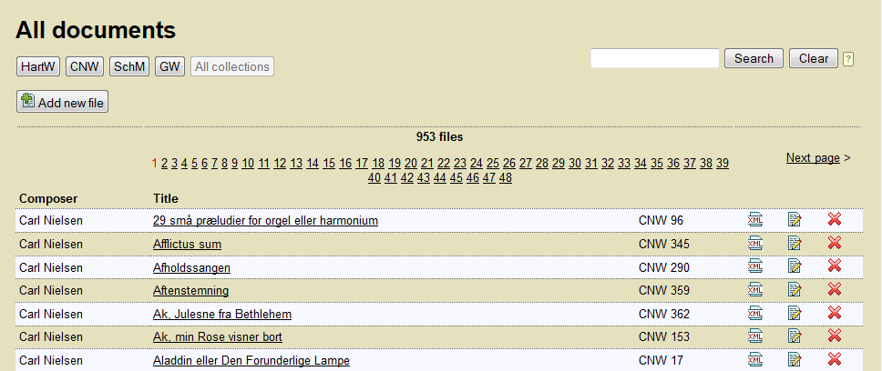

MerMEId (Metadata Editor and Repository for MEI data) is a tool for editing, (pre-)viewing and handling of music metadata based on MEI.
It consists of three main components: the MEI file browser, the metadata editing tool, and the HTML preview.
The usual way to start working with MerMEId would be to open the file list, usually located at http://[your hostname here]/storage/list_files.xq (here). You should then see a list of existing files in your collection (if any):

Collection buttons (in this example, "HartW", "CNW", "SchM", and "GW") will be visible only if you have spefcified such collections in your files. Clicking them will reduce the list to show only files belonging to that collection.
You may also reduce the number of files displayed using the "Search" field in the upper right corner. Navigate through the result pages using the page numbers or the "Previous page" / "Next page" links.
From the list, you have the following options:
The editor (i.e. the forms for editing your data) is divided into a number of separate forms. You navigate thorugh the main parts of it by clicking the tabs at the top of the page:

Important functions are found in the upper right corner of the form:
| Save file | |
| HTML preview | |
 |
XML source view |
| Close the editor end return to file list | |
| Settings |
Next to repeatable fields you will find a number of icons for adding, deleting and re-arranging items:
| Move up | |
| Move down | |
| Duplicate item (adds a copy of the current item) | |
| Add new item below the current one | |
| Delete |
[To be continued]